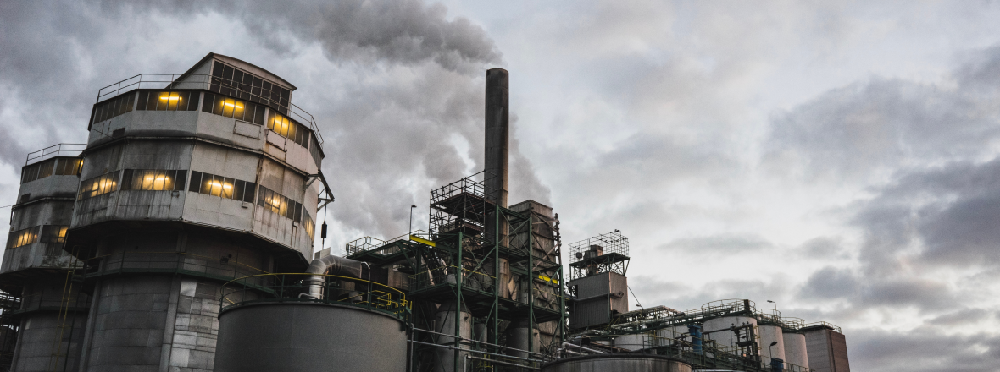

научно-производственное предприятие, занимающееся разработкой и производством силовых машин.

О предприятии
За 20 лет развития в структуре завода сформирован мощный производственный потенциал, научно-технический центр, испытательная лаборатория, современная база, учебный центр и широкая сеть региональных и международных представительств в Российской Федерации, Республике Беларусь, Узбекистане и Казахстане.
Ежегодно НПП «ПИОНЕР» реализует несколько проектов по модернизации серийных и разработке новых приборов, призванные в наибольшей степени удовлетворять возрастающие требования наших заказчиков.
В номенклатуре выпускаемой НПП «ПИОНЕР» продукции найдется все, что необходимо для успешного решения задачи автоматизации технологических процессов на любом предприятии. Все средства измерения производства «ПИОНЕР» внесены в Государственный реестр СИ и имеют необходимые разрешительные документы.